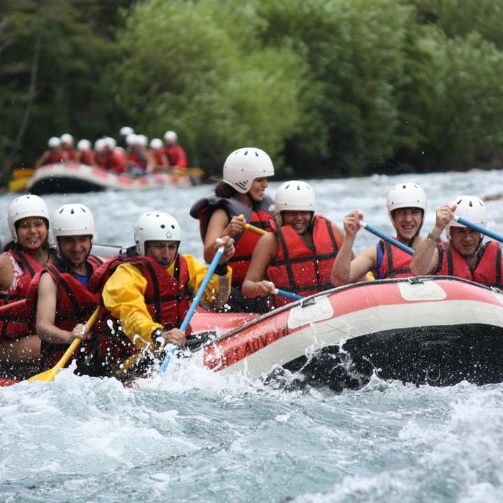

Los ríos del Parque Nacional Nahuel Huapi brindan el escenario para la práctica del rafting y el kayak.
Podés elegir las siguientes categorías:
La excursion comienza en el lago Steffen, al cual se accede desde bariloche por la ruta 40.Tras una breve charla sobre seguridad, comienza el descenso por el Río Manso, rodeado de altas cumbres frondosa veteación típica de la zona. Duración aproximada: 8 hs.
Para realizar esta excursión es necesario tener un buen estado físico y saber nadar. Luego de acceder en forma terrestre por el valle del rio Manso, se navega por su ultimo tramo, con vertiginosos saltos a través de estrechos cañones. La navegación concluye en la frontera con Chile. Duración aproximada: 10 hs.
Un día de cabalgata por una vieja estancia de la zona. Miles de hectareas que usted podrán recorrer admirando los increíbles paisajes. Los caballos y los guías nos esperan para comenzar la travesía.
Distrutá de las siguientes opciones:
Partiendo desde nuestro campo, recorremos una zona poco poblada hasta la playa este del lago moreno. Cabalgamos por la playa hasta la desembocadura del río Casa de piedra, donde emprenderemos el regreso. Distrutaremos de los cerros López, Capilla, Bella vista y Goye. Duración 3 hs
Recorreremos senderos que se internan en imponentes bosques de coihues, llegando al punto panorámicop del cerro campanario,, donde podremos apreciar desde distintos miradores, los lagos el trebol y moreno. Duración 1 hora y media.
Punto de embarque en el exclusivo en el Camping Lago Gutiérrez, un lugar diferente y único a orillas de este lago.
Los guías darán una charlas de seguridad, embarcamos comenzamos la navegación. El aproximado de navegación en el lago será de 2 hs., lo que incluye una parada en alguna de sus playas desoladas y paradisíacas para tomar un café, un te o un chocolate caliente con alfajores regionales.
Bicicletas totalmente equipadas. Con la posibilidad de realizar el recorrido del Circuito Chico, que comienza en el kilómetro 18,400 de la avenida Bustillo.
Cuadro de aluminio liviano, suspensión delantera, 24 velocidades Shimano, frenos a disco y accesorios de seguridad incluídos.
A las ya tradicionales “Centro Histórico”, con ingreso al Museo de la Patagonia y a la iglesia Catedral y “Huella Alemana”, desarrollada en equipo con el periodista y antropólogo Hans Schulz, se suman las caminatas “Legado Europeo”, “Trekking Panorámico” y “Centro Cívico”.
Las caminatas duran dos horas y parten desde la oficina de información turística en el Centro Cívico de martes a viernes a las 17 hs.
El primer vuelo es corto para una buena adaptación. Las siguientes plataformas aumentan paulatinamente la altura y longitud de los recorridos y cuentan con sorprendentes vistas panorámicas.